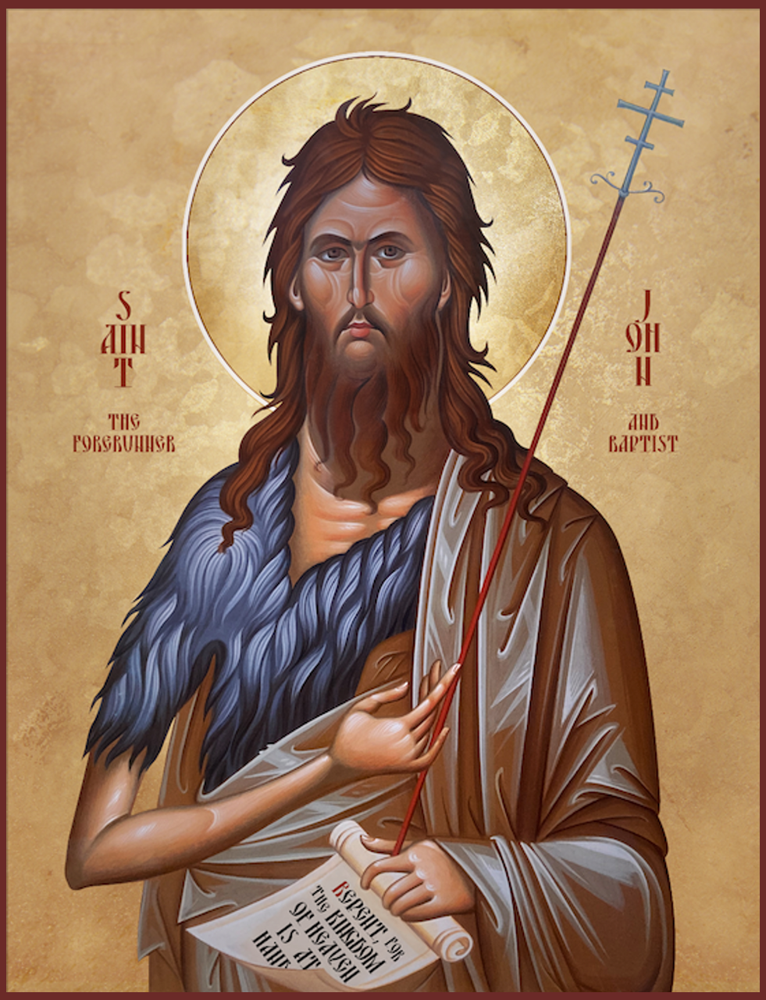
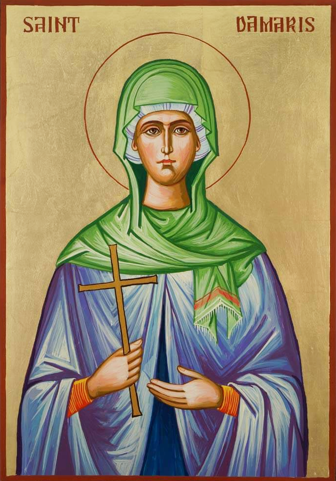

Szent Dicsőséges Próféta és Előhírnök és Keresztelő JánosSzent Dicsőséges Próféta és Előhírnök és Keresztelő JánosSzent Máté apostol és evengélistaSzent Márk apostol és evangélistaSzent Lukács apostol és evangélistaSzent Lukács apostol és evangélistaTeológus Szent János apostol és evangélistaSzenthegyi Szent Paisziosz lelkiatyaAiginai Szent Nektáriosz, Pentapoliszi püspökSzárovi Szent SzerafimSzent Kozmasz (Kozma) és Damján ingyen-gyógyítók, római csodatévőkSzent Panteleimon ingyen-gyógyító és nagyvértanúNagy Szent AntalDamaszkuszi Szent Janos atyaAthosz-hegyi Szent SzilhouanSzent Szophrony (Essex)Csodatévő Szent Miklós, myrai püspökA Három Szent Főpap: Nagy Szent Vazul, Teológus Szent Gergely és Aranyszájú Szent János emlékezeteSzent VeronikaSzentpétervári Szent XéniaSzent Damarisz